| 日付 | 2018年7月15日（日） |
|---|---|
| 山域 | 西上州 |
| メンバー | 家族（妻、長女・7歳、長男・5歳） |
| アクセス | 車 |
| ルート (Map) | 栗生駐車場 (9:31) - (10:15) 不動の滝 - (11:18) 御岳神社 - (11:50) 御座山 (12:32) - (13:53) 不動の滝 (14:06) - (14:41) 栗生駐車場 |
例年ならば天候が不安定な海の日連休、今年は3日とも晴れそうな予報になっている。
山小屋泊まりでどこかに行きたかったが、環境がそれを許さなかったため
しかたなく日帰りで山に行くことにする。
と言っても35℃越えの猛暑日で、ある程度標高の高い山に行かなければ
熱中症で倒れてしまいそうだ。
近場にはあまり標高の高い山が無いため、
少し遠出して御座山を再訪してみることにする。
あまり涼しそうなイメージは無い山だがそれなりの標高があり、
この山なら3連休でも大混雑という事は無さそうだ。
ダートの林道をノロノロ走ると終点の駐車場に到着する。標高1450m。
すでに数台の車が停まっている。
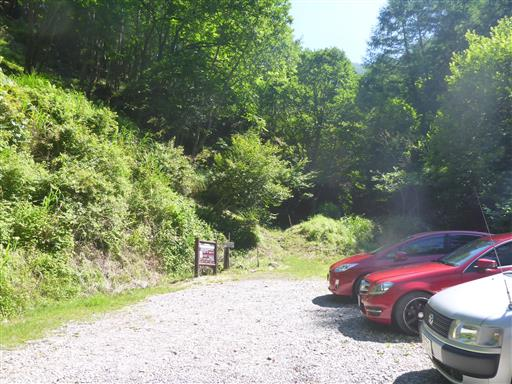
登山開始。それなりの標高まで車で上がってきたが、それでも暑い。
そして虫が多い。

緑の道。一面草が生えているが、歩く人が少ないのだろうか？
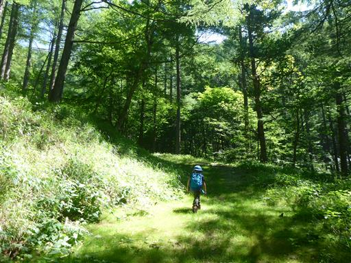
あっという間に不動の滝に到着。ここまでは順調だ。
滝の側は涼しくて気持ちが良い。
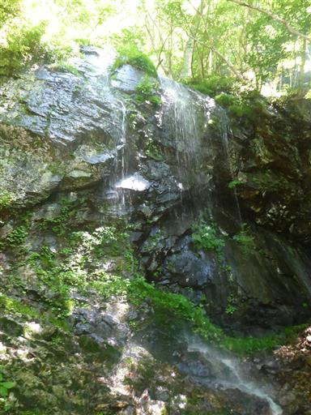
滝の側で少し休憩。
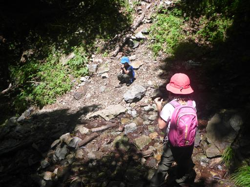
さらに登ると少しだけ展望が広がる。
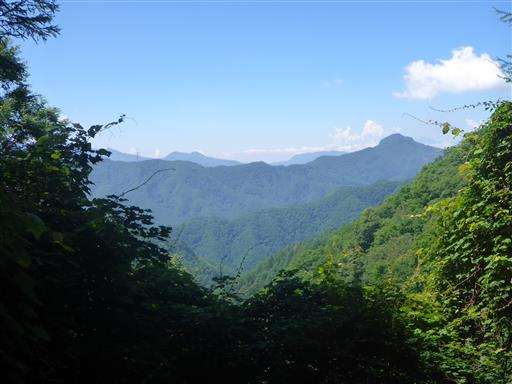
ここまで変化に乏しい登山道だったが、途中から大きな岩が現れる。
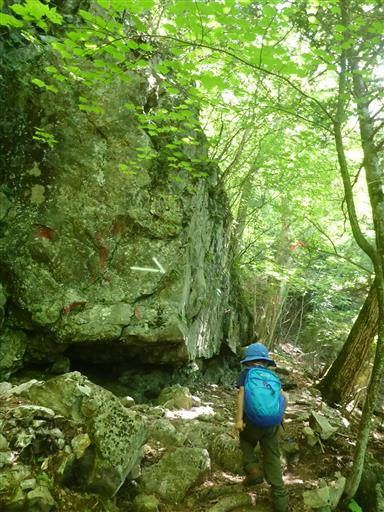
登山道を遮る倒木。息子は倒木に生えているオレンジ色の物体を眺めている。
恐らく菌類なので、キノコの仲間と教えておく。
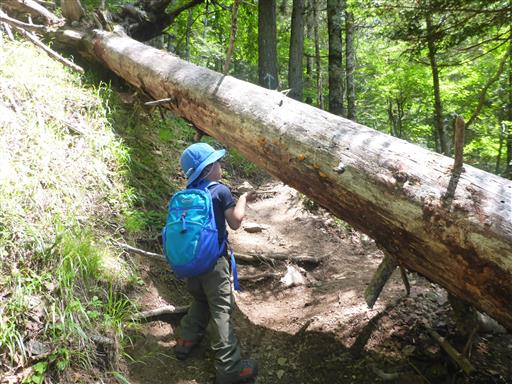
鎖場が現れる。何ヶ所か鎖場が続くが、どれも難易度は高くない。
登山道に変化が出たことで、ようやく息子の機嫌が良くなる。
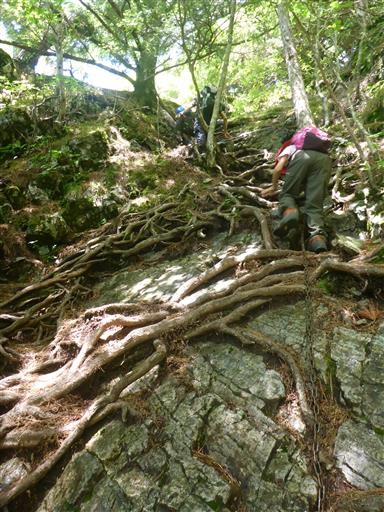
途中でもう1度展望が広がる。見える景色は山ばかりで、結構山深い。
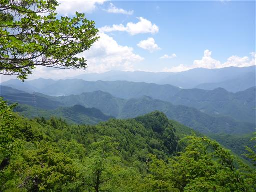
明るい岩場を登る。
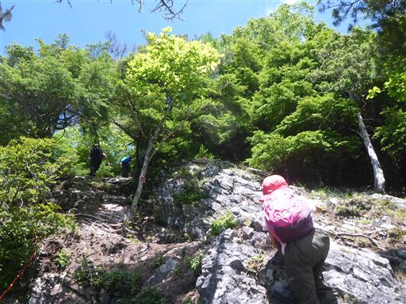
御岳神社に到着。
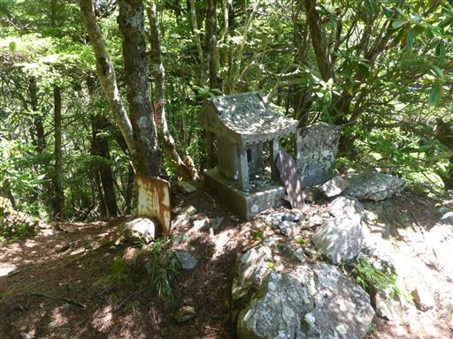
僅かに咲き残ったシャクナゲが咲いている。
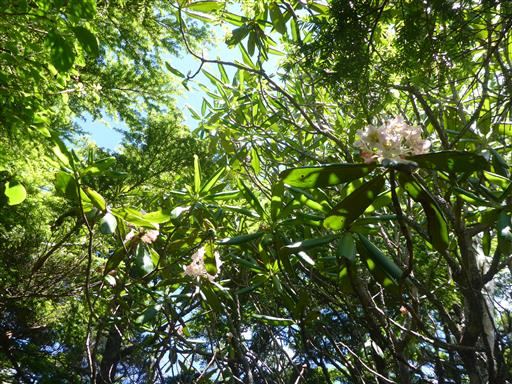
ここから登山道は急降下。
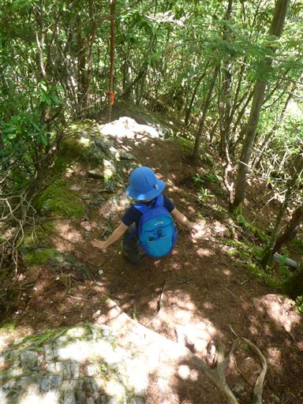
痩せ尾根を歩く。
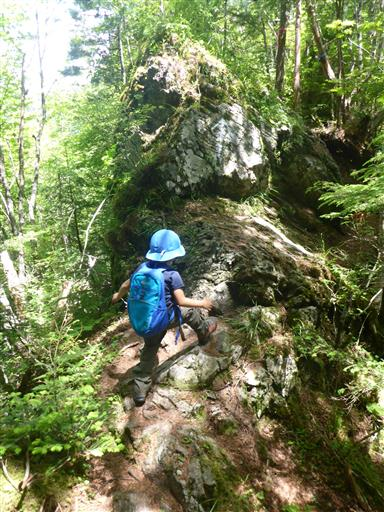
細い登山道は続く。木の密集地帯だ。
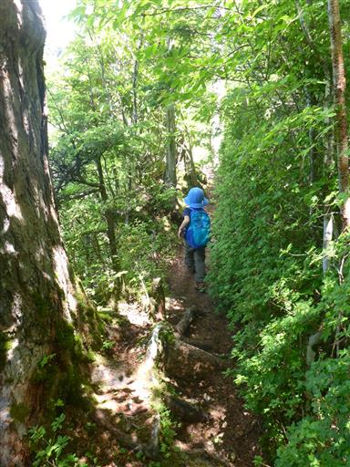
岩場の下りの手前で、御座山の山頂部が姿を現す。
見事な岩峰で格好良い。
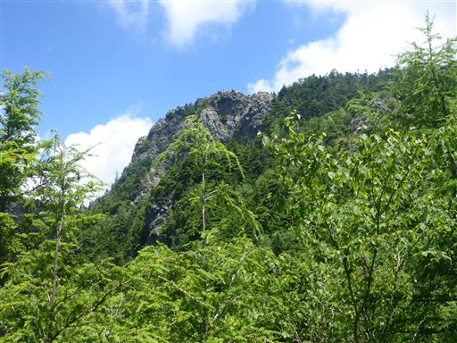
ここからは下りの鎖場。傾斜は緩い。
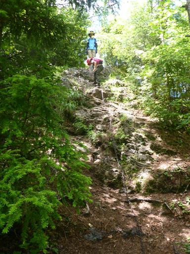
鞍部に到着。ここから一登りで山頂だ。
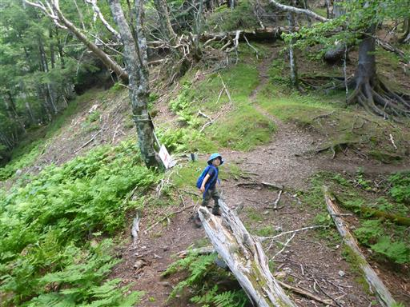
少し登ると避難小屋に到着。中を覗いてみたが雨戸（？）が全て閉まっているため真っ暗だ。
立派な避難小屋だが、縦走路が通じていないこの山で泊まる人はどの程度いるのだろうか？

山頂の一角の岩峰に到着。
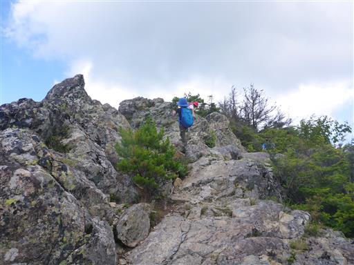
足元の岩場にはシモツケの花が咲いている。
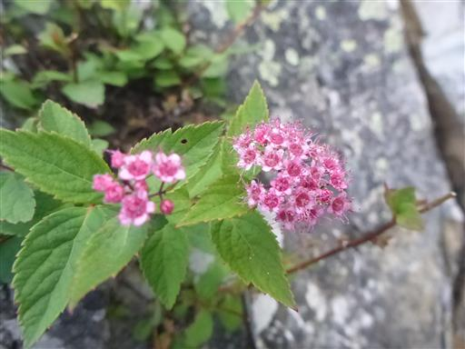
岩場の上を歩いていく。楽しい道だが滑落には注意が必要。
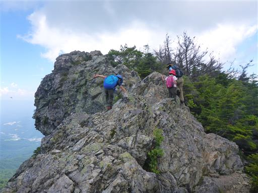
しばらく歩くと御座山の山頂が見えてくる。
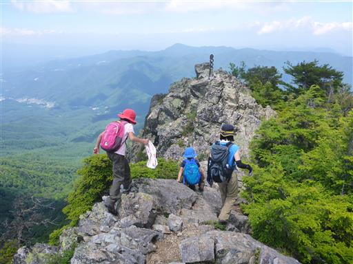
無事山頂到着。標高2112m。実に10年振りの登頂だ。
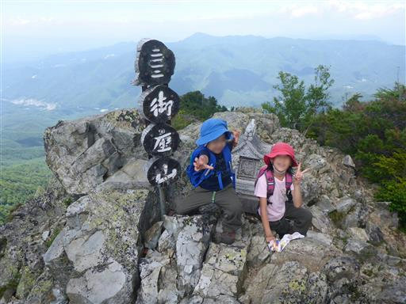
大展望が広がるはずだが、目の前の八ヶ岳は完全に雲に覆われている。
標高2000mあっても、直射日光を浴びるとかなり暑い。
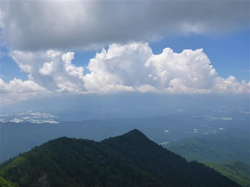
こちらは天狗山と男山。
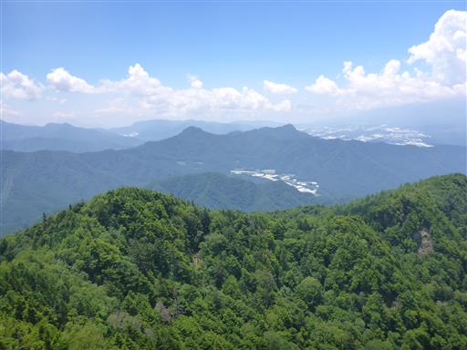
遠くに見えるのは北アルプスだろう。本日唯一の遠望だ。
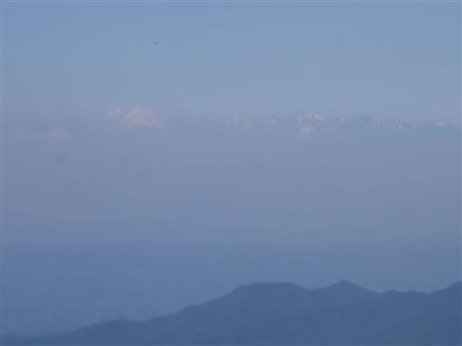
昼食をとったら下山を開始する。
山頂は外に1名がいただけで、とっても静かな山だった。
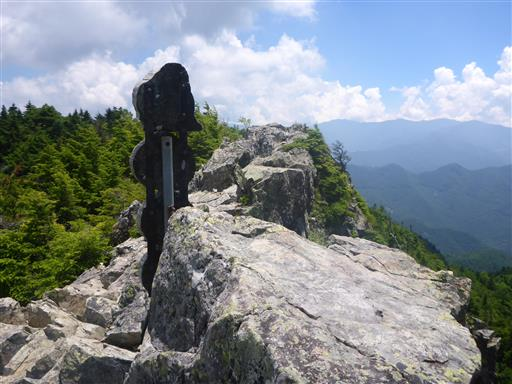
下山中に青虫を発見。動きが可愛らしい。
子供たちが枝に乗せてしばらく遊ぶ。
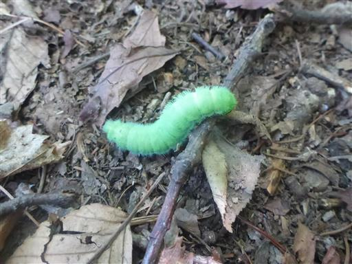
不動の滝に到着したら、ここで休憩。
ここだけは空気がひんやりしていて気持ちが良い。
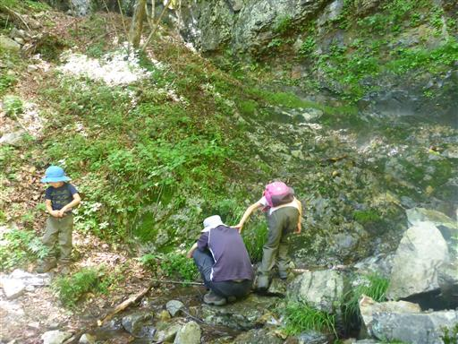
下山。他の車は全てなくなっている。
今回の登山はとにかく暑かった。そして山頂からは八ヶ岳が眺められず残念だった。
帰りの中央道は大混雑。空いている山を探したがアプローチが混んでは意味がない。
3連休に遠出の日帰りはもうよそうと思った山行だった。
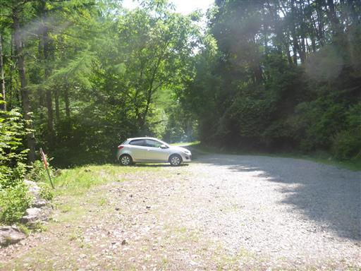